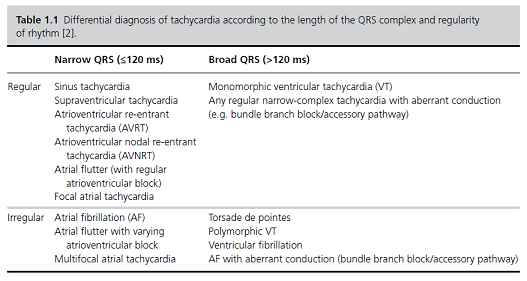
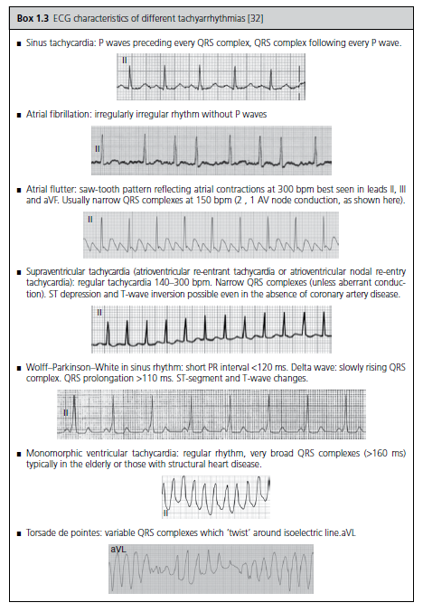

🚩 Sinus tachycardia may represent a physiological response, attempts to slow the heart rate in this context may result in hypotension
🚩 Red flag symptoms including persistent chest pain, syncope, hypotension, pyrexia, tachypnoea or hypoxia may necessitate transfer
If a specific cause is identified, management should focus on treatment of the underlying condition.
In psychiatric inpatients, if agitation or panic is suspected but alternative diagnoses cannot initially be discounted (e.g. evolving infection), then increasing frequency of observations and clinical reviews may be indicated, even if only temporarily.
Clozapine induced sinus tachycardia